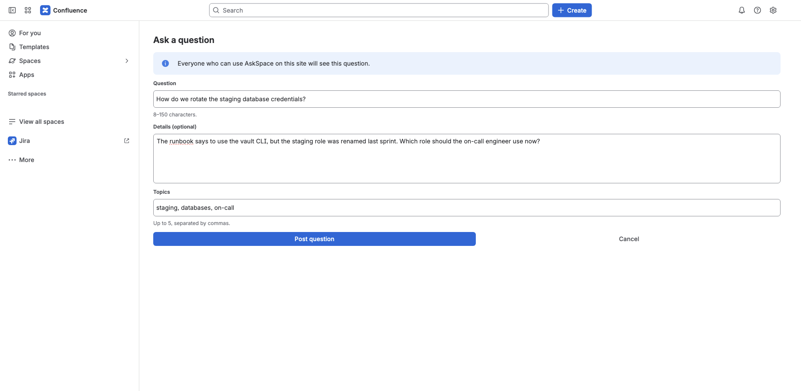
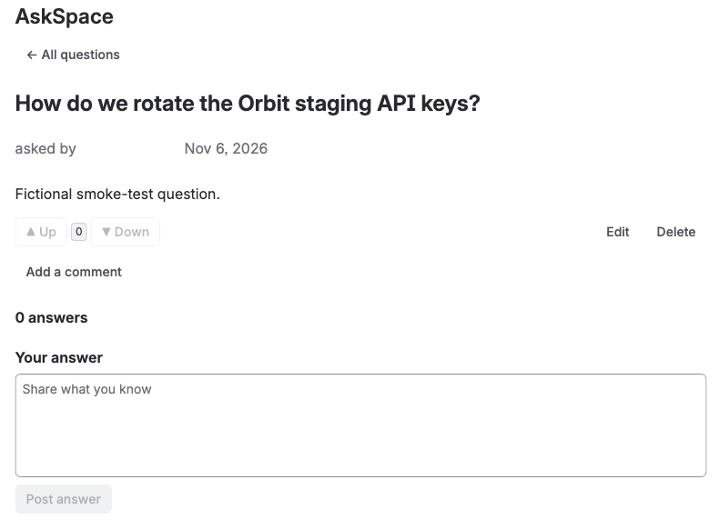
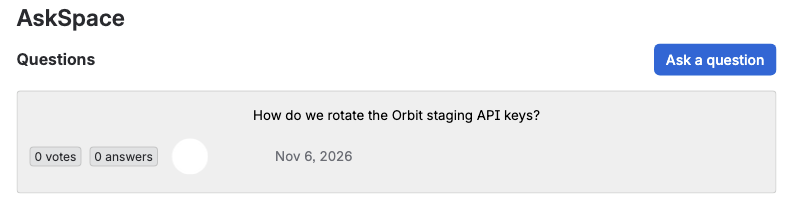

This guide is for first-time users and Confluence administrators. It describes AskSpace version 2, the version on the Atlassian Marketplace now.
Free and paid
AskSpace is a paid app. The license is free for sites with up to 10 users. Larger sites can start a free trial from the Marketplace. Prices are on the Pricing tab of the Marketplace listing.
What you can do
Active license or free trial
No active license
Read questions, answers and comments (AskSpace home, space Q&A, page questions, macro)
Yes
Yes
Delete posts (by the rules in step 3)
Yes
Yes
Ask, answer, comment, vote, accept, edit
Yes (paid)
No
Ask about this page (page-level Q&A in the byline)
Yes (paid)
Read only
AskSpace questions macro
Yes (paid)
Read only
Without an active license, AskSpace shows this message when you try to change something: "The AskSpace license for this site is not active, so AskSpace is read-only. Ask a Confluence administrator to renew it."
1. Installation and access
Make sure that you use Confluence Cloud. AskSpace does not run on Confluence Data Center.
Make sure that you are a site administrator or a Confluence administrator. Only an administrator can install apps.
In Confluence, open Apps and then Explore more apps. Search for "AskSpace".
Click Try it free (or Get it now) and follow the steps.
Read the permissions and accept them. AskSpace asks for 4 read-only scopes: read:space:confluence, read:page:confluence, read:blogpost:confluence and read:confluence-user. AskSpace uses them only to check who can see a space, page or blog post, and who is an administrator.
Users need no extra Confluence permission or group. Every logged-in user can use AskSpace. Anonymous visitors cannot use it.
Find AskSpace in these places:
AskSpace home: open Apps in the Confluence sidebar or top bar, then click AskSpace. This page shows all questions that you can see.
Space Q&A: in a space sidebar, open Space apps and click Q&A.
Ask about this page (paid): on a page or blog post, click Ask about this page in the byline under the title.
AskSpace questions macro (paid): insert it in the page editor. See step 5.
2. Ask a question
For a site-wide question, open the AskSpace home. For a question about one space, open the Q&A page of that space.
Click Ask a question.
Read the blue line at the top of the form. It tells you who will see the question. On the AskSpace home it says "Everyone who can use AskSpace on this site will see this question." In a space, only people who can view the space see the question.
Type the question in Question (8 to 150 characters).
Optional: type more information in Details (up to 10,000 characters).
Optional: type up to 5 Topics, separated by commas. Topics help people find the question and filter the macro.
Click Post question.

3. Answer, comment, vote, accept, edit and delete
Click a question in a list to open it.
To answer, type in Your answer and click Post answer. Anyone who can see the question can answer it.
To comment on a question or an answer, click Add a comment, type the comment and click Comment. A post can have up to 50 comments.
To vote, click ▲ Up or ▼ Down. Click the same button again to remove your vote. You cannot vote on your own posts.
To accept an answer, click Accept answer on it. Only the person who asked the question can accept an answer. To undo it, click Unaccept. The accepted answer always shows first.
To edit your own question or answer, click Edit, change the text and save. Only the author can edit a post.
To delete, click Delete. For a question, confirm with Delete question and its answers. These people can delete:
A question: its author while it has no answers, a Confluence administrator, or a space administrator of its space.
An answer or a comment: its author, a Confluence administrator, or a space administrator of its space.

4. Page-level Q&A with Ask about this page (paid feature)
Open a page or a blog post.
Click Ask about this page in the byline under the title. A panel opens with the questions about this page or blog post.
Click Ask a question and continue as in step 2. Only people who can view the page see its questions. Page restrictions apply.
Page questions also show on the AskSpace home and on the Q&A page of the space that the page is in.
This feature needs an active license or a free trial. Without one, the panel is read-only.
5. Add the AskSpace questions macro (paid feature)
Edit a page.
Type /AskSpace or open the macro browser, and select AskSpace questions.
Open the macro settings and set these fields:
Topic (optional): show only the questions with this topic, for example "onboarding". Leave it empty to show all topics.
Show questions from: This space only or All spaces I can see.
Filter: All questions or Unanswered only.
Questions per page: 5, 10 or 20.
Publish the page. Each reader sees only the questions that they have access to.
Readers can click Ask a question in the macro. A question asked from the macro always belongs to the current space, also when the macro shows all spaces.

This feature needs an active license or a free trial. Without one, the macro is read-only.